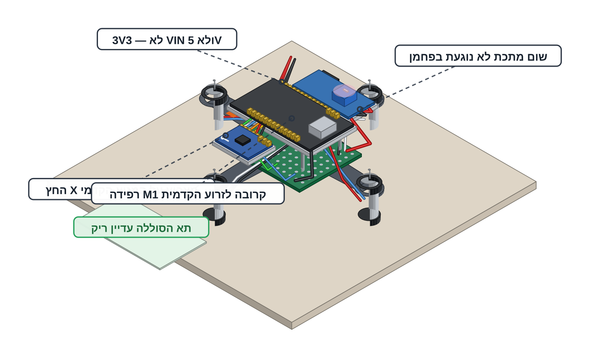
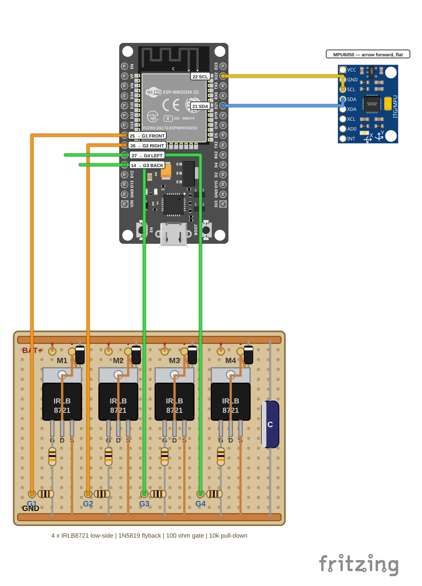

מרכיבים ומחווטים את כל הרחפן
מקבעים את ארבעת הלוחות על המסגרת ומחווטים את כל 22 החיבורים.
הסוללה מחכה בשקית חסינת האש שעל שולחן המורה וכבל ה-USB מנותק — זה המצב היחיד שבו נוגעים בחיווט, בחוטים או במנועים. המדחפים נשארים בקופסאות של המורה ועולים על הרחפן בפעם הראשונה רק בבדיקת הדחף על המשקל.
מלחימים רק כשהמורה ליד התחנה, עם משקפי מגן על העיניים כל זמן שהמלחם דולק — בדיוק כמו בפרויקט 4.
לוחות הפחמן של המסגרת מוליכים חשמל כמו חוט ועמודי המתכת מחברים ביניהם — בידוד של לוח אחד לא מספיק. כל לוח אלקטרוני יושב על בידוד משלו שמכסה את כל שטחו: סרט ספוג בגודל הלוח כולו ולא נקודה במרכז. שום מתכת לא נוגעת בפחמן.
כל הלחמה בכרטיסייה הזו נעשית בידיים שלכם וכל מדידה היא שלכם. את פתיל הסוללה — החיבור היחיד שנושא את כל הזרם — כבר הלחים המורה. הכרטיסייה נותנת את ההחלטה ואת הבדיקה. את הסדר בתוך כל חלק אתם קובעים.

מרכיבים על המסגרת
ארבעה לוחות ותא סוללה — כל אחד במקום שהחיווט מצפה לו ועל בידוד משלו.
TOP PLATE FRONT <- MPU X arrow points here [ MPU6050 ] flat, own full-footprint foam [ ESP32 ] centred, USB connector -> BACK arm [ MT3608 ] beside it, pot screw reachable BOTTOM PLATE (underside) [ MOSFET board ] M1 pad -> FRONT, four tabs heat-shrunk [ battery bay ] two O-rings only, stays empty every board: sheet + full-footprint foam, no metal on carbon
קושרים את לולאת הקשירה בלוח התחתון כל עוד הוא ריק: לולאה בגודל 10 מ"מ מחוט קלוע בעובי 1 מ"מ, דרך שני חורים סמוכים בקו המרכז, קשורה בצד העליון ותלויה כ-10 מ"מ מתחת ללוח.
הלולאה יושבת מתחת למרכז הכובד ונשארת מחוץ לתא הסוללה ומחוץ למעגלי המדחפים. בכל טיסה קושרים אליה את חוט הקשירה.
מדביקים את ה-ESP32 במרכז הלוח העליון על כרית ספוג בעובי 3 מ"מ שמכסה את כל שטחו, כשחיבור ה-USB פונה לזרוע האחורית. לוחצים 10 שניות. את ה-MT3608 מדביקים לצדו על כרית משלו כשבורג הכוונון נשאר נגיש.
קצות הפינים שוקעים לתוך הספוג. קצה פין שנוגע בלוח מחבר את VIN או 3V3 אל GND דרך הפחמן.
מדביקים את ה-MPU6050 ישר לפני ה-ESP32 על ריבוע ספוג שמכסה את כל שטחו: הצד עם השבב כלפי מעלה, הלוח שטוח לגמרי והחץ X שמודפס עליו מצביע על המנוע הקדמי.
בודקים את השטיחות בעין מהצד ולוחצים בעדינות — לא מועכים את הספוג. חיישן נטוי פירושו רחפן שנוטה תמיד.
מקבעים את לוח ה-MOSFET מתחת ללוח התחתון: ארבעת גופי המתכת שוכבים שטוחים ועטופים בשרוול מתכווץ, הצד עם התוויות קריא ורפידה M1 קרובה לזרוע הקדמית.
סדר השכבות: יריעת בידוד (קפטון או כרטיס פלסטיק חתוך למידת הלוח) בין צד ההלחמה לפחמן, מעליה סרט ספוג דו-צדדי בעובי 1–2 מ"מ שמכסה את כל שטח הלוח ורק אז אזיקון 2.5 מ"מ דרך חריצי הלוח — מעל השכבות ולא במקומן. בלי דבק ובלי סרט עבה על המוספטים.
מכינים את תא הסוללה מתחת ללוח המוספטים: כרית ספוג בעובי 2 מ"מ שמכסה את כל צד הרכיבים וסרט בד על שני קצוות הלוח שהגומיות עוברות עליהם. את הסוללה יחזיקו רק שתי גומיות המסגרת — בלי אזיקון ובלי סרט הדבקה על הסוללה.
מעבירים אצבע בתוך התא הריק — לא מרגישים שום דבר חד ושום מתכת. התא נשאר פתוח: סוללה צריכה להיכנס ולצאת ביד בלי כלים. פתיל הסוללה יוצא מהתא עם קצת עודף אורך אל הצד שבו התקע מתחבר.
בודקים במולטימטר שהבידוד עובד: המולטימטר על Ω (טווח 2M או אוטומטי), המחוש השחור על קצה חשוף של הלוח או על חור בורג — לא על הפנים המבריקות — והמחוש האדום עובר אחת-אחת על BAT+, GND, VIN, 3V3, ארבעת פדי M− וארבעת פדי G. בכל נגיעה המסך מראה OL.
הופיע מספר באחת הנקודות? מרימים את הלוח הזה, מוסיפים שכבת בידוד, מרכיבים מחדש ומודדים שוב.
עץ החשמל
שישה חוטים מהלוח עד החיישן. אדום לפלוס ושחור למינוס בכל אחד מהם.

מהלוח אל הממיר: חוט אדום 22–24 AWG מפד BAT+ השני אל IN+ וחוט שחור מפד GND השני אל IN−. מפשיטים 3 מ"מ, מצפים בבדיל ומלחימים.
פדי BAT+ ו-GND הראשונים תפוסים בפתיל הסוללה.
מהממיר אל הבקר: חוט אדום 26 AWG מ-OUT+ אל VIN וחוט שחור מ-OUT− אל חיבור ה-GND שנמצא לידו במחבר הימני.
בצד הבקר בוחרים: שקע דופונט נקבה או הלחמה ישירה לפיני המחבר. דופונט מתפרק בקלות והלחמה לא משתחררת ברעידות.
מהבקר אל החיישן: חוט אדום דק מחיבור 3V3 אל VCC וחוט שחור דק מחיבור ה-GND שליד 3V3 אל GND של החיישן. 3V3 — לא VIN ולא 5 V.
בסוף שלושת הזוגות עוברים בעין על הקוטביות בשני הקצוות — בממיר ובבקר.
כל מנוע לערוץ שלו
שמונה הלחמות. הזרוע שמסומנת FRONT קובעת את כל השאר.

מקצרים כל זוג חוטים כך שיגיע לפדים שלו עם כ-1 ס"מ עודף, מפשיטים 2 מ"מ ומצפים בבדיל. חוט קצר יותר שוקל פחות.
מלחימים מנוע-מנוע: FRONT אל M1, RIGHT אל M2, BACK אל M3 ו-LEFT אל M4. אדום או לבן הם הפלוס, כחול או שחור הם המינוס. מלבישים שרוול מתכווץ על כל חוט חשוף שעלול לגעת בשכן שלו.
מנוע שיסתובב בהמשך לכיוון ההפוך — התיקון הוא החלפה בין שני החוטים שלו על הפדים.
בודקים במולטימטר במצב רציפות: M1+ מול M1− נותן צפצוף או 1–3Ω — זו הסלילה של המנוע. חוזרים על M2, M3 ו-M4 ואז בודקים ש-M1+ מול M2− שותק.
רושמים על הכרטיס איזה מנוע יושב על איזה ערוץ — מהרישום הזה קוראים בחלק הבא.
חוטי האות
שישה חוטים דקים שמעבירים מידע ולא את הזרם של המנועים.

מחברים את ארבעת חוטי השערים, כל אחד בצבע שלו: צהוב GPIO 25 אל G1 קדמי, כתום GPIO 26 אל G2 ימני, ירוק GPIO 14 אל G3 אחורי וכחול GPIO 27 אל G4 שמאלי.
ארבעת הפינים יושבים ברצף במחבר הימני: 14 · 27 · 26 · 25.
מחברים את שני חוטי החיישן: לבן GPIO 21 אל SDA ואפור GPIO 22 אל SCL. בצד הבקר דופונט נקבה או הלחמה, בצד הלוח והחיישן מלחימים.
מעבירים את חוטי השערים מתחת ללוחית והרחק מחוטי המנועים. מקבעים כל חוט חשמל באזיקון קטן או בטיפת דבק חם — לא על לוח המוספטים — ומרחיקים הכול ממעגלי המדחפים.
מודדים כל אחד מארבעת פיני השערים בבקר מול GND — הקריאה בערך 10kΩ. זו אותה מדידה של נגד ההורדה שכבר עשיתם על הלוח, עכשיו מצד המוח: קריאה כזו מוכיחה שחוט השער באמת מחובר.
ספירת 22 החיבורים
עוברים קבוצה-קבוצה, עוקבים באצבע מקצה אחד לקצה השני ומסמנים.
חשמל · 6 — שני חוטים מהלוח אל הממיר, שניים מהממיר אל הבקר ושניים מהבקר אל החיישן
מנועים · 8 — שני חוטים בכל אחד מארבעת הערוצים M1–M4
שערים · 4 — 25 · 26 · 14 · 27 אל G1–G4
I2C · 2 — 21 SDA ו-22 SCL
סוללה · 2 — פתיל אדום אל BAT+ ופתיל שחור אל GND (הלחמת המורה — רק מוודאים שהוא במקום ושהצבעים נכונים)
רחפן מחווט לגמרי בלי סוללה: כל לוח על בידוד משלו, החץ של החיישן פונה לזרוע הקדמית וכל חוט בצבע שלו. המולטימטר מראה OL בכל נגיעה בין רפידה ללוח, צפצוף בכל אחת מארבע הסלילות ובערך 10kΩ בכל אחד מארבעת השערים.
שום דבר עוד לא דולק — ההפעלה הראשונה היא בשלב הבא, יחד עם המורה.
זה הפרויקט האחד שבו החומרה יכולה לפגוע בכם — המדחפים והסוללה. בגלל זה המורה מחזיק את שניהם, בגלל זה חובשים משקפי מגן בכל רגע שמנוע יכול להסתובב, בגלל זה הרחפן תמיד על חוט ובגלל זה כל אחד רשאי להגיד STOP. כל הכללים בכרטיסיית R1.